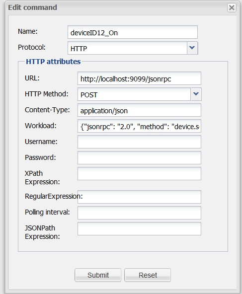
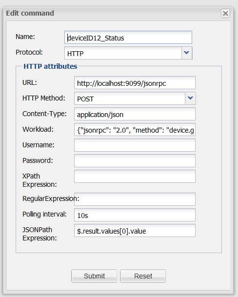
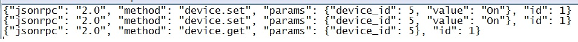

Forums : Openremote+DomotiGa+ jsonrpc
This page last changed on Feb 06, 2014 by juha.
Dear Openremote,
I have been trying to use Openremote and data extracted from Domotiga using JSONRPC. I have tested the followings
- Openremote+ XBMC using JSONRPC : Working
- Openremote+ DomotiGa using JSONRPC: NOT WORKING
This are the configurations I have done in Openremote:


with the following workloads

while testing from the terminal with the following command:
curl -sS -X POST -H "Content-Type: application/json" -H "Accept: application/json" -d '{"jsonrpc": "2.0", "method": "device.set","params": {"device_id": 5,"value": "Off"}, "id": 1}' localhost:9099
everything worked fine bun when I try with Openremote I get the following errors:
ERROR [main]: Could not start VeraClient:
java.lang.IllegalArgumentException: Host name may not be null
at org.apache.http.HttpHost.<init>(HttpHost.java:83)
at org.apache.http.impl.client.AbstractHttpClient.determineTarget(AbstractHttpClient.java:586)
at org.apache.http.impl.client.AbstractHttpClient.execute(AbstractHttpClient.java:708)
at org.apache.http.impl.client.AbstractHttpClient.execute(AbstractHttpClient.java:700)
at org.openremote.controller.protocol.vera.VeraClient.requestStatus(VeraClient.java:244)
at org.openremote.controller.protocol.vera.VeraClient.startVeraClient(VeraClient.java:79)
at org.openremote.controller.protocol.vera.VeraCommandBuilder.startVeraClient(VeraCommandBuilder.java:155)
at org.openremote.controller.protocol.vera.VeraCommandBuilder.<init>(VeraCommandBuilder.java:68)
at sun.reflect.NativeConstructorAccessorImpl.newInstance0(Native Method)
at sun.reflect.NativeConstructorAccessorImpl.newInstance(NativeConstructorAccessorImpl.java:57)
at sun.reflect.DelegatingConstructorAccessorImpl.newInstance(DelegatingConstructorAccessorImpl.java:45)
at java.lang.reflect.Constructor.newInstance(Constructor.java:534)
at org.openremote.controller.command.CommandFactory.updateCommandBuilders(CommandFactory.java:104)
at org.openremote.controller.deployer.Version20ModelBuilder.build(Version20ModelBuilder.java:552)
at org.openremote.controller.deployer.AbstractModelBuilder.buildModel(AbstractModelBuilder.java:154)
at org.openremote.controller.service.Deployer.startup(Deployer.java:858)
at org.openremote.controller.service.Deployer.startController(Deployer.java:336)
at org.openremote.controller.spring.SpringContext.initializeController(SpringContext.java:109)
at org.openremote.controller.service.ServiceContext.init(ServiceContext.java:383)
at org.openremote.controller.bootstrap.Startup.loadServiceContext(Startup.java:85)
at org.openremote.controller.bootstrap.servlet.ServletStartup.initializeServiceContext(ServletStartup.java:190)
at org.openremote.controller.bootstrap.servlet.ServletStartup.contextInitialized(ServletStartup.java:109)
at org.apache.catalina.core.StandardContext.listenerStart(StandardContext.java:3843)
at org.apache.catalina.core.StandardContext.start(StandardContext.java:4342)
at org.apache.catalina.core.ContainerBase.addChildInternal(ContainerBase.java:791)
at org.apache.catalina.core.ContainerBase.addChild(ContainerBase.java:771)
at org.apache.catalina.core.StandardHost.addChild(StandardHost.java:525)
at org.apache.catalina.startup.HostConfig.deployDirectory(HostConfig.java:926)
at org.apache.catalina.startup.HostConfig.deployDirectories(HostConfig.java:889)
at org.apache.catalina.startup.HostConfig.deployApps(HostConfig.java:492)
at org.apache.catalina.startup.HostConfig.start(HostConfig.java:1149)
at org.apache.catalina.startup.HostConfig.lifecycleEvent(HostConfig.java:311)
at org.apache.catalina.util.LifecycleSupport.fireLifecycleEvent(LifecycleSupport.java:117)
at org.apache.catalina.core.ContainerBase.start(ContainerBase.java:1053)
at org.apache.catalina.core.StandardHost.start(StandardHost.java:719)
at org.apache.catalina.core.ContainerBase.start(ContainerBase.java:1045)
at org.apache.catalina.core.StandardEngine.start(StandardEngine.java:443)
at org.apache.catalina.core.StandardService.start(StandardService.java:516)
at org.apache.catalina.core.StandardServer.start(StandardServer.java:710)
at org.apache.catalina.startup.Catalina.start(Catalina.java:578)
at sun.reflect.NativeMethodAccessorImpl.invoke0(Native Method)
at sun.reflect.NativeMethodAccessorImpl.invoke(NativeMethodAccessorImpl.java:57)
at sun.reflect.DelegatingMethodAccessorImpl.invoke(DelegatingMethodAccessorImpl.java:43)
at java.lang.reflect.Method.invoke(Method.java:622)
at org.apache.catalina.startup.Bootstrap.start(Bootstrap.java:288)
at org.apache.catalina.startup.Bootstrap.main(Bootstrap.java:413)
INFO 2014-02-05 18:03:11,539 : No rule definitions found in '/home/ckbsmart/OpenRemote-Controller-2.1.0_SNAPSHOT-2013-06-17/webapps/controller/rules'.
INFO 2014-02-05 18:03:11,539 : Initialized event processor : Drools Rule Engine
INFO 2014-02-05 18:03:11,626 : Initialized event processor : RRD4J Data Logger
INFO 2014-02-05 18:03:11,627 : Initialized event processor : EmonCMS Data Logger
INFO 2014-02-05 18:03:11,685 : Registered sensor : Sensor (Name = 'deviceID12_SENSOR', ID = '3699935', State Mappings: {})
INFO 2014-02-05 18:03:11,686 : Registered sensor : Sensor (Name = 'Weather sensor cond', ID = '3698156', State Mappings: {})
INFO 2014-02-05 18:03:11,703 : Registered sensor : Sensor (Name = 'Weather sensor temp', ID = '3698151', State Mappings: {})
INFO 2014-02-05 18:03:11,711 : Startup complete.
INFO 2014-02-05 18:03:11,726 : Controller Definition File Watcher for Default Deployer started.
Feb 5, 2014 6:03:12 PM org.apache.coyote.http11.Http11Protocol start
INFO: Starting Coyote HTTP/1.1 on http-8080
Feb 5, 2014 6:03:12 PM org.apache.catalina.startup.Catalina start
INFO: Server startup in 3922 ms
ERROR [Polling thread for sensor: deviceID12_SENSOR]: ClientProtocolException when executing HTTP method
org.apache.http.client.HttpResponseException: Request Entity Too Large
at org.apache.http.impl.client.BasicResponseHandler.handleResponse(BasicResponseHandler.java:67)
at org.apache.http.impl.client.BasicResponseHandler.handleResponse(BasicResponseHandler.java:54)
at org.apache.http.impl.client.AbstractHttpClient.execute(AbstractHttpClient.java:735)
at org.apache.http.impl.client.AbstractHttpClient.execute(AbstractHttpClient.java:709)
at org.apache.http.impl.client.AbstractHttpClient.execute(AbstractHttpClient.java:700)
at org.openremote.controller.protocol.http.HttpGetCommand.requestURL(HttpGetCommand.java:231)
at org.openremote.controller.protocol.http.HttpGetCommand.run(HttpGetCommand.java:245)
at java.lang.Thread.run(Thread.java:701)
ERROR [Polling thread for sensor: deviceID12_SENSOR]: Could not perform jsonpath evaluation
java.lang.IllegalArgumentException: json can not be null or empty
at org.apache.commons.lang.Validate.notEmpty(Validate.java:363)
at com.jayway.jsonpath.JsonPath.read(JsonPath.java:304)
at org.openremote.controller.protocol.http.HttpGetCommand.run(HttpGetCommand.java:282)
at java.lang.Thread.run(Thread.java:701)
ERROR [Polling thread for sensor: deviceID12_SENSOR]: ClientProtocolException when executing HTTP method
org.apache.http.client.HttpResponseException: Request Entity Too Large
at org.apache.http.impl.client.BasicResponseHandler.handleResponse(BasicResponseHandler.java:67)
at org.apache.http.impl.client.BasicResponseHandler.handleResponse(BasicResponseHandler.java:54)
at org.apache.http.impl.client.AbstractHttpClient.execute(AbstractHttpClient.java:735)
at org.apache.http.impl.client.AbstractHttpClient.execute(AbstractHttpClient.java:709)
at org.apache.http.impl.client.AbstractHttpClient.execute(AbstractHttpClient.java:700)
at org.openremote.controller.protocol.http.HttpGetCommand.requestURL(HttpGetCommand.java:231)
at org.openremote.controller.protocol.http.HttpGetCommand.run(HttpGetCommand.java:245)
at java.lang.Thread.run(Thread.java:701)
ERROR [Polling thread for sensor: deviceID12_SENSOR]: Could not perform jsonpath evaluation
java.lang.IllegalArgumentException: json can not be null or empty
at org.apache.commons.lang.Validate.notEmpty(Validate.java:363)
at com.jayway.jsonpath.JsonPath.read(JsonPath.java:304)
at org.openremote.controller.protocol.http.HttpGetCommand.run(HttpGetCommand.java:282)
at java.lang.Thread.run(Thread.java:701)
and when I press the button for the command i get:
ERROR [HTTP-Thread-2]: ClientProtocolException when executing HTTP method org.apache.http.client.HttpResponseException: Request Entity Too Large at org.apache.http.impl.client.BasicResponseHandler.handleResponse(BasicResponseHandler.java:67) at org.apache.http.impl.client.BasicResponseHandler.handleResponse(BasicResponseHandler.java:54) at org.apache.http.impl.client.AbstractHttpClient.execute(AbstractHttpClient.java:735) at org.apache.http.impl.client.AbstractHttpClient.execute(AbstractHttpClient.java:709) at org.apache.http.impl.client.AbstractHttpClient.execute(AbstractHttpClient.java:700) at org.openremote.controller.protocol.http.HttpGetCommand.requestURL(HttpGetCommand.java:231) at org.openremote.controller.protocol.http.HttpGetCommand.send(HttpGetCommand.java:162) at org.openremote.controller.service.impl.ControlCommandServiceImpl.trigger(ControlCommandServiceImpl.java:95) at org.openremote.controller.rest.ControlCommandRESTServlet.handleRequest(ControlCommandRESTServlet.java:77) at org.openremote.controller.rest.RESTAPI.doPost(RESTAPI.java:159) at javax.servlet.http.HttpServlet.service(HttpServlet.java:637) at javax.servlet.http.HttpServlet.service(HttpServlet.java:717) at org.apache.catalina.core.ApplicationFilterChain.internalDoFilter(ApplicationFilterChain.java:290) at org.apache.catalina.core.ApplicationFilterChain.doFilter(ApplicationFilterChain.java:206) at org.openremote.controller.rest.support.json.JSONCallbackFilter.doFilter(JSONCallbackFilter.java:63) at org.apache.catalina.core.ApplicationFilterChain.internalDoFilter(ApplicationFilterChain.java:235) at org.apache.catalina.core.ApplicationFilterChain.doFilter(ApplicationFilterChain.java:206) at org.springframework.web.filter.CharacterEncodingFilter.doFilterInternal(CharacterEncodingFilter.java:78) at org.springframework.web.filter.OncePerRequestFilter.doFilter(OncePerRequestFilter.java:77) at org.apache.catalina.core.ApplicationFilterChain.internalDoFilter(ApplicationFilterChain.java:235) at org.apache.catalina.core.ApplicationFilterChain.doFilter(ApplicationFilterChain.java:206) at org.apache.catalina.core.StandardWrapperValve.invoke(StandardWrapperValve.java:233) at org.apache.catalina.core.StandardContextValve.invoke(StandardContextValve.java:191) at org.apache.catalina.core.StandardHostValve.invoke(StandardHostValve.java:128) at org.apache.catalina.valves.ErrorReportValve.invoke(ErrorReportValve.java:102) at org.apache.catalina.core.StandardEngineValve.invoke(StandardEngineValve.java:109) at org.apache.catalina.connector.CoyoteAdapter.service(CoyoteAdapter.java:286) at org.apache.coyote.http11.Http11Processor.process(Http11Processor.java:845) at org.apache.coyote.http11.Http11Protocol$Http11ConnectionHandler.process(Http11Protocol.java:583) at org.apache.tomcat.util.net.JIoEndpoint$SocketProcessor.run(JIoEndpoint.java:354) at java.util.concurrent.ThreadPoolExecutor.runWorker(ThreadPoolExecutor.java:1146) at java.util.concurrent.ThreadPoolExecutor$Worker.run(ThreadPoolExecutor.java:615) at java.lang.Thread.run(Thread.java:701) ^CFeb 5, 2014 6:03:33 PM org.apache.coyote.http11.Http11Protocol pause INFO: Pausing Coyote HTTP/1.1 on http-8080 Feb 5, 2014 6:03:34 PM org.apache.catalina.core.StandardService stop INFO: Stopping service Catalina Feb 5, 2014 6:03:34 PM org.apache.catalina.core.StandardWrapper unload INFO: Waiting for 1 instance(s) to be deallocated
can someone please help me or at least point me where I can find more info on what those errors are..
Thank you in advance
{kind=link}
{kind=link}
{kind=link}
{kind=link}
{kind=link}
{kind=link}